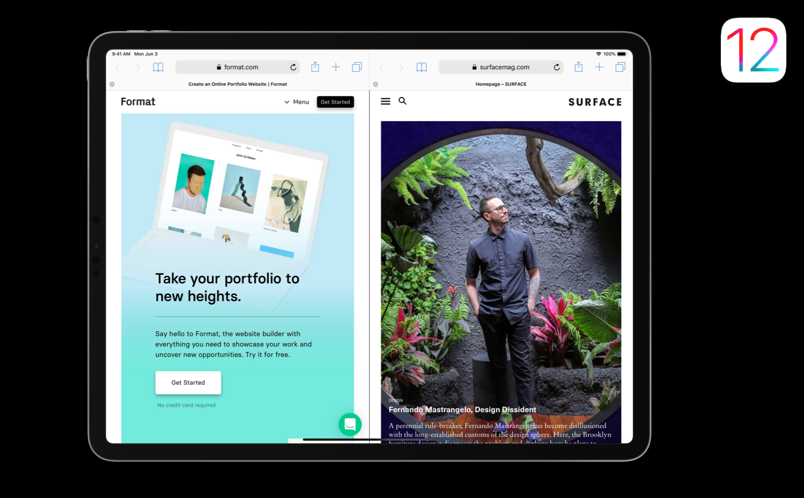

在 iOS 13 及之后的版本中，iPad app 可以支持多窗口功能。例如，在一个具有文档创建功能的 iPad app 中，人们可以同时打开多个文档窗口。这篇文章会从设计和实现层面讲述 iPad 多窗口功能的触发方法、样式以及功能等主题。

注意：如果你想把你的 iPad app 带到 Mac 中去，想让 Mac 版本支持多窗口功能，那就必须在 iPad app 中支持多窗口功能。有关于把 iPad app 带到 Mac 中去，参见 「把 iPad 上的 app 带到 Mac 中去（上）」和 「把 iPad 上的 app 带到 Mac 中去（下）」 。
目录
人们可以好多种方式打开一个新的窗口，例如：
- 从 Dock 栏拖拽 app 的图标到屏幕的一边，选择一个当前的窗口或者创建一个新的窗口；
- 拖拽一个对象到屏幕的一边，把它释放到系统提供的可供释放的目标上；
- 长按 Dock 栏上或者首页上一个 app 的图标，点击情景菜单中出现的「显示所有窗口」，再点击添加按钮；
- 长按一个对象直到出现一个情景菜单，其中包括在新窗口中查看对象的选项。
通常情况下，iPad app 使用两种类型的窗口。「Primary window 主要窗口」包括了多个 app 对象以及与之相关的动作，通常人们会一直与「primary window」保持交互。「Auxiliary window 辅助窗口」包含了一个对象以及与之相关联的动作，人们在关闭辅助窗口前通常会与其只交互一次。例如，在「邮件」app 中，主要窗口包括了邮箱，而一条单独的信息会展示在辅助窗口中。
- 支持主要窗口和辅助窗口的多窗口体验：因为主要窗口总是包含高层级的对象，人们会从打开展示了不同区域内容的多窗口中受益。例如，人们可能想要首要邮件窗口一个展示他们的收件箱，另一个展示草稿箱。正如你所期待的，多个辅助窗口让用户更容易浏览和在多个条目间工作，例如多条邮件信息。
- 确保一个辅助窗口自己是有用的：辅助窗口应该给人们 app 的内容和功能的额外视图。避免只是使用辅助窗口去提供主要窗口内容的选项或工具。
- 在辅助窗口使用一个「Done 完成」或者「Close 关闭」按钮：因为辅助窗口只包含了一个任务或对象的内容和动作，人们期望在完成时能够关闭它。不要在按钮中使用「Back 后退」来关闭窗口。你可以在按钮中使用「Back 后退」去帮助人们返回窗口中的上一个视图。
设计意图
在 iOS 12 和之前的版本中，如果你进入切换 app 界面，你会看到下面这种 app 的网格布局，你可以点击其中一个进入那个 app。

在 iOS 13 中，一切看上去还跟以前一样，但在这个界面中，不再全是一个个的应用，而是一个个的窗口。
首先来看下多窗口功能在 app 中是什么样子的，从中解答两个问题，我的 app 应该支持多窗口功能吗？如果需要支持，这些多窗口应该是怎样的？具体的我应该在哪里添加多窗口功能？它们应该怎么表现？用户是如何思考它们的？我们将通过看几个 Apple 原生应用的例子来回答上面的问题。
先来看「Safari 浏览器」，Safari 是多窗口功能的早产儿，因为在 iOS 13 之前的版本就已经基本具备了多窗口功能，下图中展示了在 iOS 12 中，Safari 通过分隔视图实现了多窗口功能。

在 iOS 13 或者 iPadOS 13 中，是下面这个样式，实际上看起来和之前没有什么不同。因为在之前，在 Safari 中能使用多窗口功能打开多个网页就已经非常重要，现在我们将多窗口功能带到了整个系统中。
具体来看，Safari 的每个窗口都是完全一样的，它们就像是另一个界面的克隆。每一个窗口都可以做 app 所有的事情，这很重要，因为在 iPad 上用户应该在他们想要的那个窗口中做任何的事情。如果人们觉得需要，还可以创建更多的窗口。但是需要注意，如果你的 app 必须依赖多窗口功能才能工作，那就有些问题了。所以说每一个窗口都是另一个窗口的克隆并不是必须的，但用户打开的第一个窗口应该可以完成所有的事情更加重要。而在 Safari 的这个例子中，每一个窗口都是一样的，在大多数的 app 中也是这样。
在 iOS 13 的 Safari 中，你可以随时从多窗口的 Split View 模式转换到 Slide Over 模式，并将屏幕边缘的窗口滑出去，以进行一会儿更加专注的工作。
第二个例子是一个基于文档的 app，Pages。在任何基于文档的 app 中，用户都会希望能够同时在不同的窗口中查看多个文档。所以你很有必要支持多窗口功能。但有一个点你需要注意，在每个窗口的左上角，有一个「文档」按钮，你可以通过这个按钮访问你想要的其他文档。这也跟 Safari 一样，每一个窗口都是一样的。当然，并不是每一个基于文档的 app 都要做成这样，但在这里，这是讲得通的。
第三个例子是「Maps 地图」，它也是只有一种多窗口类型的 app，要在这里提这个 app 的原因，是它更可以展示需要支持多窗口功能的必要性。通常情况下，你打开地图，去到某个地方然后关闭它。但当你计划你的晚上安排时，你可能想要先去吃晚饭，晚饭后再去看一个演出，在此时使用多窗口功能就很有帮助，你可以在两者之间思考并改变它们。所以我们不能确保在任何时候多窗口功能都是有用的，但我们知道有时候会用上它。
同时，多窗口功能是系统级别的。当你已经确定了要去哪里吃晚饭后，你可以关闭右边的地图，将其替换成「Notes 备忘录」app，从而去完成其他事情。
第四个例子是「Mail 邮件」，这是第一个有不同类型多窗口功能的 app。当你回复一条消息时，你可以把这个模态窗口变成一个单独的窗口，以 Slide Over 或者 Split View 的方式展示。你可以看到在单独的这个信息窗口中有一个发送按钮和一个取消按钮，你不能在这个窗口中回到上一级的邮件列表中，这种窗口是经过特殊设计的，当你点击发送或者取消按钮时，这个窗口就会关闭，关闭时会有一个过渡动画，这也可以应用在你的 app 中。

你可以通过滑动窗口底部的知识条在多个 Slide Over 的窗口中切换。

第五个例子是「Messages 信息」，它也有不同类型的多窗口。当你把一条消息拖动到屏幕边缘时，就可以开启一个单独的窗口，一个只属于那个对话的窗口。你会在窗口顶部看到一个完成按钮，点击就可以完成这个任务。在浏览一条信息时可以同时查看另一条信息作为参考是非常有帮助的。所以在这种需要另一个页面同时作为参考时，就需要支持多窗口功能。
最后一个例子是「Calendar 日历」，日历已经支持了拖放功能，但现在通过多窗口功能，你可以在不同的窗口中同时查看两个不同周的事项，你还可以从一边拖拽一个事项到另一边。所以如果你的 app 支持了多窗口的拖放功能，你也可以获得上面这个功能的强大能力。
今年我们介绍了将 iPad app 带到 Mac 上去，Mac app 都有多个窗口，如果没有多窗口功能，Mac app 会非常奇怪。但现在有了 iOS 13 的多窗口功能，这件事就变得更加顺理成章了。

那具体用户可以通过什么样的交互打开多窗口功能呢？
首先来看下系统提供了哪些交互。在 App Expose 中，右上角会有一个小按钮用来打开新的窗口，这是系统自带的功能。
另外一个就是可以通过拖拽 app 的图标到屏幕的边缘开启多窗口功能，因为当你那样操作时，就像是确切的在说我要在这里开启一个新的窗口。

再来看下用户会根据已有的东西做出哪些动作来想开启多窗口功能。用户可以直接拖拽 Safari 的某个 tab 到屏幕边缘来开启多窗口功能，这种交互系统不能自动帮你实现，但你可以通过 API 适配实现这个交互。
如果用户可以拖拽起某个对象，并且打开一个新的窗口可以讲得通的话，那用户就期望有这么一个功能，你应该去实现他。比较普遍的例子就是任何形式的「master-detail view 主要-详情视图」，比如在「Mail 邮件」中，左侧主视图中的每一个 cell 都代表着一条消息，如果点击一条消息，那就可以在详情视图中看到完整的消息。所以用户就会期望当拖起 table view 中的一条消息到屏幕边缘时可以打开一个新的窗口。

你也可以通过一个确切的动作创建一个新的窗口。在像 Safari 这样有链接的应用中，可以通过长按一个链接显示一个弹窗，在弹窗中有一个按钮，通过点击这个按钮可以在新窗口中打开链接。
用户不应该被强制使用多窗口功能，应该需要一个用户触发的确切的动作才能开启多窗口功能。
实现
待更新 ……
参考链接
- Introducing Multiple Windows on iPad - WWDC 2019 - Videos - Apple Developer
- Multiple Windows - System Capabilities - iOS - Human Interface Guidelines - Apple Developer
如果你觉得这篇文章对你有所帮助，欢迎请我喝杯咖啡，感谢你的支持😁